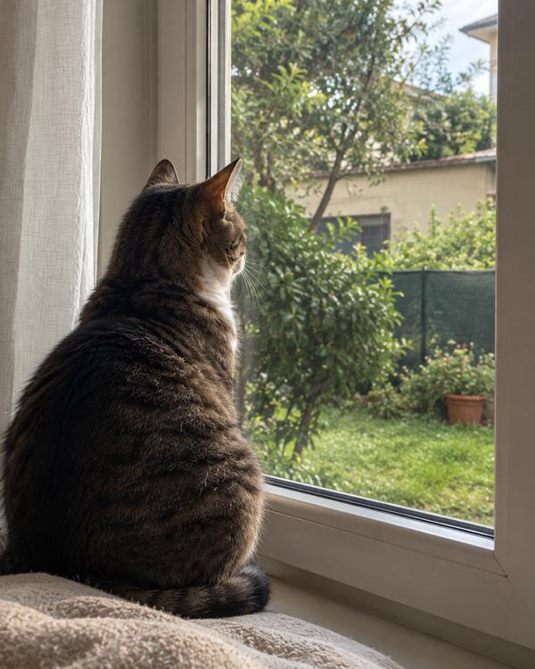
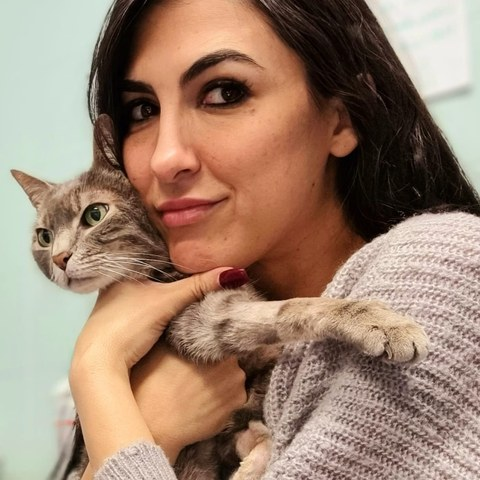

Capire il tuo gatto è il primo passo per aiutarlo
Aggressività, pipì fuori posto, ansia, tensioni fra gatti che convivono: dietro ogni comportamento c'è una ragione.

Cos'è una consulenza comportamentale
Parte da una domanda semplice: perché il tuo gatto si comporta così?
Guardo come vive la casa, dove mangia, dove dorme, dove si nasconde e come si muove fra le persone e gli altri animali.
Analizzo la sua storia, da quando è nato a quando è arrivato a casa.
Da lì ricostruisco la storia del comportamento e scrivo un piano che tu possa applicare davvero, a casa tua.
Cosa comprende
- Un questionario che leggo e analizzo prima di vederci
- Da 60 a 90 minuti a casa tua o in videochiamata
- Una relazione scritta con il piano di intervento, che consegno entro 72 ore
- Un primo follow-up dopo 14 giorni
Prima del comportamento viene la clinica
Un gatto che urina fuori dalla lettiera può avere una cistite, non uno stress. Per questo lavoro con il tuo veterinario.

Sono la Dott.ssa Maria Letizia Cau, medico veterinario da dieci anni, formata in etologia applicata e relazione felina, diplomata SIUA.
Di cosa mi occupo
I motivi più frequenti per cui una famiglia mi contatta.
Disturbi comportamentali
- Problemi di eliminazione inappropriata urine e feci
- Aggressività comprese le forme rediretta, da paura, territoriale, tra conviventi, verso le persone
- Distruttività
- Vocalizzazioni
- Iperattività
- Ansia da separazione
- Apatia
- Disturbi da stress cronico e ambientale
- Comportamenti compulsivi e stereotipati over-grooming (leccamento eccessivo), wool-sucking (succhiare o masticare i tessuti) e altre stereotipie
- Paure e fobie rumori, persone, altri animali, situazioni specifiche
- Ipervigilanza e difficoltà di adattamento a nuovi stimoli
- Difficoltà di socializzazione gattini e soggetti adulti con scarsa socializzazione pregressa
Percorsi
- Consulenza pre-adozione scelta del soggetto più adatto al contesto familiare
- Inserimento di un nuovo gatto in famiglia
- Gestione di conflitti tra gatti già conviventi
- Convivenza gatto-cane
- Abituazione al trasportino e riduzione dello stress da trasporto
- Preparazione a viaggi e trasferte
- Gestione di traslochi e cambiamenti ambientali
- Gestione di modifiche del nucleo familiare arrivo di un neonato, nuovo partner, lutto, partenza di un componente della famiglia
Altro
- Valutazioni comportamentali di secondo livello su invio di colleghi veterinari
- Percorsi di supporto in caso di sintomi psicosomatici per esempio cistite idiopatica felina, problematiche dermatologiche o gastrointestinali con una componente da stress
Come funziona
Compili il form
Poche domande sulla storia del tuo gatto, sulla casa e su cosa ti preoccupa.
Consulto a domicilio o online
A casa tua oppure in videochiamata, dopo un breve video-tour degli spazi.
Ricevi il tuo piano comportamentale
Una relazione scritta su misura, con un primo follow-up dopo due settimane.
Raccontami cosa sta succedendo
Ti bastano pochi minuti. Rispondo entro 48 ore e valutiamo insieme se è la strada giusta, senza impegno.
Richiedi una consulenzaEsperienze dei proprietari
Buonasera dottoressa. La aggiorno su Baghi. La situazione continua a migliorare. Quando sono a casa tengo sempre le porte aperte. A volte, se esco per giri vicino casa, lo lascio libero, con mamma che ogni tanto lo controlla. Abbiamo montato la rete sul balcone. Dorme, mentre all’inizio dormiva poco. Stiamo godendoci un nuovo Baghi. Ogni tanto, ma non spesso come prima, fa cadere qualcosa dal mobile del salone o distrugge la pianta.
Cara Dottoressa, molte grazie per il riscontro. Sono molto felice di averla conosciuta, mi ha fatto sempre sentire ascoltata, compresa e supportata, oltre a darmi ottimi consigli concreti. Lo apprezzo moltissimo. Tango ha smesso definitivamente di urinare sul divano.
Tutto questo, l’amicizia tra Lillo e Artù, è stata possibile anche grazie al prezioso aiuto della Dottoressa Cau che ci ha seguito passo passo, consigliato e incoraggiato nei periodi più tosti. L’arrivo del piccolo è stato inaspettato per noi, ma soprattutto per Artù, ed è essenziale trattare l’inserimento con i giusti tempi e le giuste modalità, non forzando l’interazione e osservando e accogliendo i vari segnali comportamentali dei due mici.